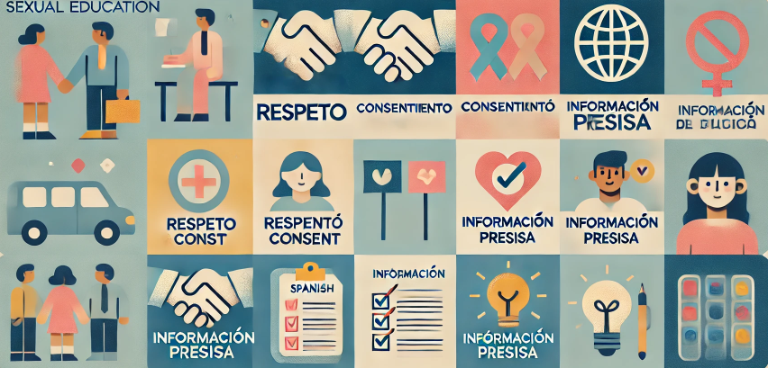
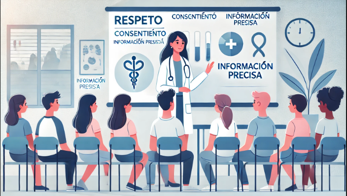
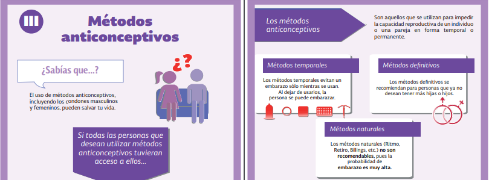

La educación sexual integral, un proceso basado en el currículo de enseñanza y
aprendizaje sobre los aspectos cognitivos, emocionales, físicos y sociales de la sexualidad, que permite
a las y los jóvenes proteger y defender su salud, bienestar y dignidad proporcionándoles un necesario conjunto
de herramientas de conocimientos, actitudes y habilidades. Los equipa con
información precisa sobre el desarrollo humano, la sexualidad, la reproducción y las relaciones saludables que se adapta a la edad y la cultura particular.
Es una condición previa para el ejercicio de la plena autonomía corporal y la toma de decisiones informadas
sobre la salud y los derechos sexuales y reproductivos. Se basa en y promueve
la comprensión de los derechos
humanos universales, la igualdad de género y los derechos y el empoderamiento de los jóvenes.
La educación sexual integral (ESI) es un método de enseñanza de la educación sexual basado en un plan de estudios cuyo objetivo es proporcionar a los alumnos los conocimientos,
actitudes, aptitudes y valores holísticos
necesarios para tomar decisiones sanas e informadas en su vida sexual. La intención es que esta comprensión ayude a los estudiantes a entender su
cuerpo y sus procesos reproductivos, a
practicar sexo seguro reduciendo los incidentes de contraer infecciones de transmisión sexual (ITS) como el VIH y el VPH, a reducir los embarazos
no planificados y no deseados, así como
a disminuir los índices de violencia doméstica y sexual.1
Los programas de educación sexual integral abarcan una amplia gama de temas
relacionados con la salud y los derechos sexuales y
reproductivos. Los planes de estudios relativos al comportamiento sexual difieren en función del público, pero suelen incluir información
adecuada a la edad sobre la pubertad, la
adolescencia, las relaciones sexuales y la edad de consentimiento. Esto incluye la promoción de comportamientos sexuales seguros, como el uso
correcto de métodos anticonceptivos, la
comunicación con la pareja y la realización de pruebas de ITS. Además, los planes de estudios de la ESI pueden tratar los resultados del embarazo,
como la salud materna, la crianza de los
hijos, la adopción y el aborto. En la actualidad, también se da importancia a la información sobre orientación sexual, identidad y expresión de género
y características sexuales.
Las adolescentes tienen un mayor riesgo de complicaciones graves durante el embarazo, como preeclampsia y parto prematuro, en comparación con las mujeres adultas.
Somos un equipo interdisciplinar que trabaja con sexualidades, sus diversidades y la coeducación en este tema.
Fundadora y directora de educacion sexual, estudiante del colegio municipal aeropuerto, encargada de la renovacion de quiz.
Fundadora y directora de educacion sexual, experta en sexualidad y diversidad de género, estudiante del colegio municipal aeropuerto, encargada de el diseño.
Fundadora y directora de educacion sexual, estudiante del colegio municipal aeropuerto, encargada de la recopilación de informacion para la web.
Fundadora y directora de educacion sexual, estudiante del colegio municipal aeropuerto, encargada de la recopilación de informacion para la web
Somos un grupo de cuatro estudiantes comprometidas con la creación de una página web dedicada a la educación sexual, orientada principalmente hacia los adolescentes y jóvenes. Nuestro objetivo es abordar temas esenciales como los embarazos adolescentes, las enfermedades de transmisión sexual (ETS) y los métodos anticonceptivos, proporcionando información clara, accesible y basada en evidencias científicas. En un mundo donde la información abunda, pero no siempre está bien fundamentada o presentada de manera adecuada para los jóvenes, creemos que nuestra plataforma puede ser un recurso valioso para la educación y prevención.
La educación sexual es una pieza clave para el desarrollo saludable de los adolescentes, y lamentablemente, en muchos contextos, sigue siendo un tema rodeado de mitos, tabúes o simplemente ignorado. Nosotras, como estudiantes, hemos identificado la necesidad urgente de un espacio que no solo eduque, sino que lo haga de manera respetuosa y abierta, adaptada a las inquietudes de esta generación. Queremos que los adolescentes sientan que tienen acceso a la información que necesitan para tomar decisiones informadas y responsables sobre sus cuerpos y sus relaciones.
Uno de los primeros temas que abordaremos es el de los embarazos adolescentes. Los datos muestran que este fenómeno sigue siendo un reto importante en muchos países, con consecuencias profundas tanto para las madres adolescentes como para sus hijos. Nuestro enfoque no es moralista, sino educativo. Queremos que las adolescentes comprendan las realidades y riesgos asociados con un embarazo a temprana edad, y que estén equipadas con la información necesaria para prevenirlo si así lo desean.
Por otro lado, las enfermedades de transmisión sexual (ETS) son un problema de salud pública que, aunque común, sigue siendo ampliamente malentendido. Nuestra página brindará información sobre las ETS más prevalentes, sus síntomas, modos de transmisión y, lo más importante, cómo prevenirlas de manera eficaz. La falta de conocimiento o la desinformación sobre este tema pone en riesgo la salud de muchos jóvenes, y estamos decididas a ser parte del cambio, promoviendo el uso responsable de métodos de protección y la importancia de hacerse chequeos médicos regulares.
Finalmente, los métodos anticonceptivos serán uno de los ejes centrales de nuestra página. Desde los métodos tradicionales hasta los más recientes, ofrecemos información detallada sobre cómo funcionan, sus tasas de efectividad y los posibles efectos secundarios. Queremos que los adolescentes y jóvenes entiendan que tienen varias opciones a su disposición para evitar embarazos no deseados y protegerse de las ETS, y que sepan cómo elegir el método que mejor se adapte a sus necesidades y estilo de vida.
En resumen, nuestro proyecto no es solo una página web más sobre educación sexual; es una herramienta para empoderar a los adolescentes con conocimientos prácticos, fiables y respetuosos sobre sus cuerpos y su salud. Como jóvenes estudiantes, entendemos de cerca las preocupaciones y dudas que surgen en esta etapa de la vida, y estamos listas para ofrecer un recurso que guíe a nuestros compañeros y compañeras en la búsqueda de una sexualidad sana, segura y libre de prejuicios.